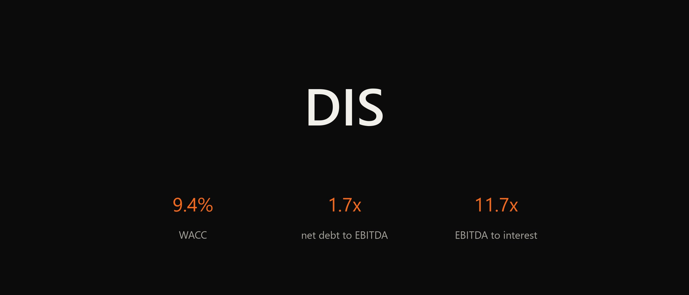

Disney DCF model.

Disney is the closest comparison to Skydance that already operates as one company, with studios, linear networks and streaming under one roof, in addition to the parks.
The question, the method, the finding, and what it means
- The question
- What is Disney worth with linear networks shrinking inside Entertainment, and where could Skydance's margins settle if it finished integrating?
- Data and method
- FY2026 revenue of about $101 billion from nine months of actuals plus guidance, three segments with separate growth paths, capex fading from a $9 billion cruise ship peak, and a 9.4 percent WACC.
- What I found
- The model gives $79.11 a share on the perpetuity method and $114.42 on the exit multiple, against a $110.16 price. The price implies 4.1 percent growth forever for a company whose linear networks are shrinking.
- What it means
- Experiences is 57 percent of operating income and the piece Skydance does not have. Disney shows what an integrated media company earns, and it still only reaches its price on the exit multiple.
Skydance with parks and twenty years of integration
Disney has the same three pieces as the combined Skydance, studio, linear networks and streaming, and has already made them one company. Its Entertainment segment is the best public read on where Skydance's margins could settle. Experiences is the piece Skydance does not have, and it is more than half of Disney's operating income.
Fiscal 2026 results come November 17. The base year is nine months of actuals plus fourth quarter guidance, and the model states this.
The numbers
The base case on the perpetuity method, at a 9.4 percent WACC and 2 percent long term growth. This is below the $110.16 price.
The base case on the exit multiple method, at 10 times FY2032 EBITDA. This is in line with the price. The market pays about 9 times today.
The perpetual growth the price implies on the perpetuity method. For a company whose linear networks are shrinking, that is a demanding assumption to hold in perpetuity.
The share of value that falls after FY2032.
The range from bear to bull across both methods. The bear case shrinks Entertainment 1 percent a year with margins falling to 21 percent, and the bull case grows all three segments and takes margins to 28 percent.
FY2026 capex guidance, up from $5.4 billion two years earlier, almost all of it cruise ships. The base case brings it back to 7 percent of revenue by FY2030.
These are model outputs under stated assumptions. Nothing on this page is a recommendation to buy or sell anything.
Inputs that differ from the template
- Base year. Revenue about $101 billion and total segment operating income about $19.7 billion for FY2026, from nine months of actuals plus guidance. EBITDA adds $5.3 billion of depreciation.
- Revenue. Entertainment $48 billion growing 3 percent fading to 2, Sports $18.5 billion growing 3 fading to 2, Experiences $39 billion growing 6 fading to 4. The FY2027 total of $105.5 billion is within $100 million of consensus.
- EBITDA. One blended margin starting at 24.5 percent and drifting up to 25.8 as streaming scales. Restructuring of $300 million in FY2027 fading to zero.
- Discount rate. Unlevered beta 1.05, 0.2 debt to equity, cost of equity 10.5 percent, cost of debt 5.7 percent on a single A rating. WACC 9.4 percent.
- Equity bridge. $46 billion of borrowings, $5.2 billion of cash, $6.8 billion of noncontrolling interests after the Fubo and NFL deals, 1,727 million shares from the 10-Q cover.
- Stub. 94 percent of FY2027 remains from the valuation date, so almost a full first year is discounted at a mid year 0.47.
Two pictures

Base case EBITDA, free cash flow and revenueFree cash flow steps up as capex comes down from the cruise ship peak. That capex path is the biggest judgment in the model after the margin. 
Where the answers landThe exit multiple range straddles the price. The perpetuity grid reaches it only below an 8 percent WACC or with 3 percent growth. Street targets run $111 to $164.
I tried to use the reported tax rate
Fiscal 2025 shows a tax benefit from a $3.3 billion Hulu item, so the reported rate is not usable. I use the same 23 percent cash rate as the other four, with the FY2024 derived 23.7 percent as the check. The $110.16 price is from October 16 and not October 23, and the model flags this.
In order of how much they move it
- Linear decline inside Entertainment. Linear was $3 billion of the segment's $4.7 billion of operating income in FY2025. If it falls 10 percent a year and streaming does not fill the hole, the base case becomes the bear case.
- Capex. Each point of revenue in terminal capex is worth about $8 a share. The cruise ships are the reason this input matters.
- Experiences growth. The segment is 57 percent of operating income. Two points of growth there is worth more than five points in Sports.
- The November 17 results. They replace my estimated base year with a real one.
The model
Download the Excel model · Back to the five
Blue cells are inputs. Pick a scenario in Inputs cell C5. The base year is labelled as an estimate until the FY2026 10-K is out. Nothing in the model comes from a Bloomberg Terminal or from any employer.